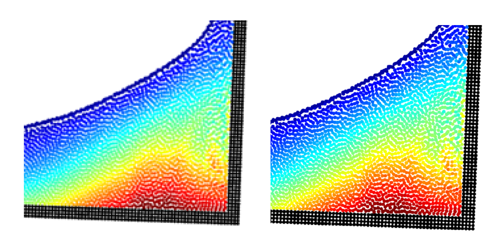
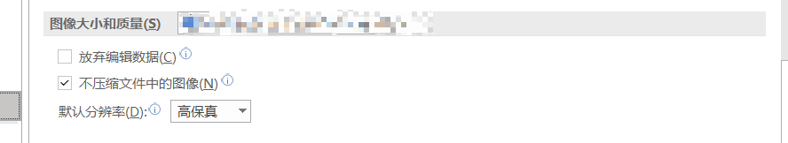
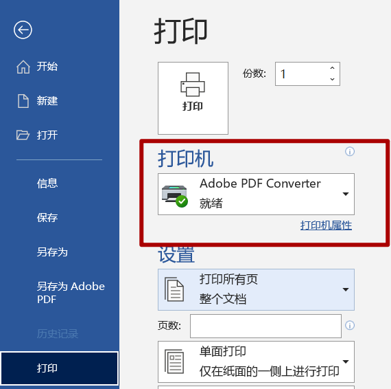
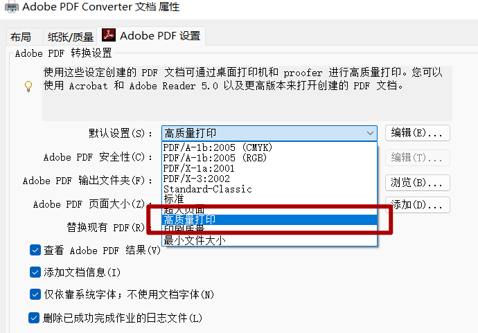
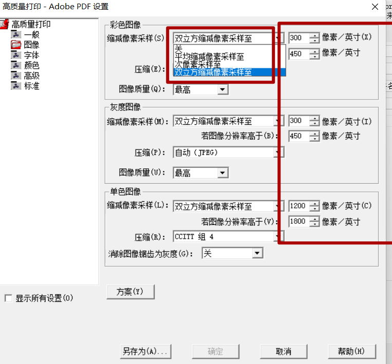
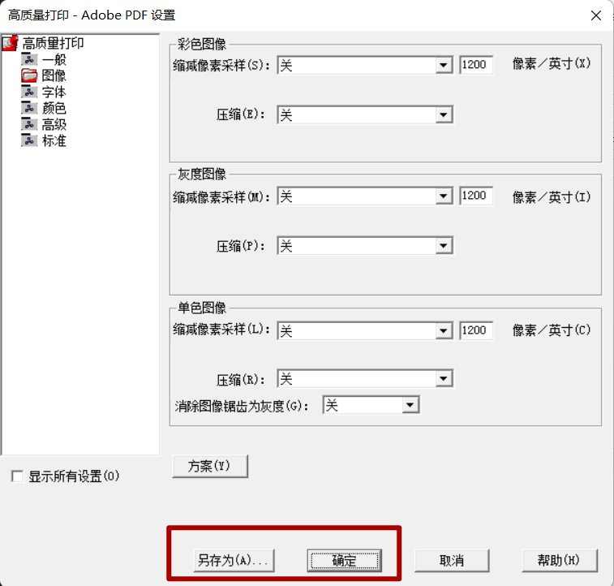
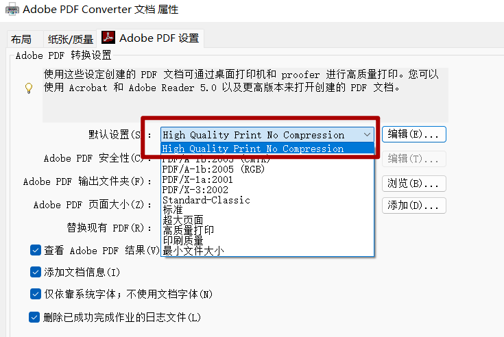
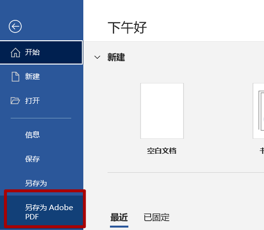

Word转PDF时图片无损输出¶
本文用于解决以下问题
由word文档转成pdf后，图片（非矢量图）分辨率下降
本文不适用于以下情景
word文档中所有图片都是矢量图，或者对图片分辨率要求不高
latex用户
不采用Adobe Acrobat将word转换成PDF的用户
先贴出结果对比，可以看出在放大600%的情况下，不同方法已经出现了明显的分辨率差异

具体做法
(1) 首先在word中保证不对图片进行压缩，打开任意一个word文档，左上角 文件->选项->高级 中找到如下选项并按图中选择高保真和不压缩图像 
(2) 在word文档中打开打印界面，选中打印机为adobe pdf，并选择打印机属性,在adobe pdf 设置中选择高质量打印 

至此，打印到PDF的分辨率相比刚开始已经获得了较大提升，但是对于一些对图片dpi要求较为严格的情况下可以按下面情况继续设置
（3）点击高质量打印旁边的编辑按钮，并进入到图像模块，可以选择关闭所有采样和压缩（这样会导致文档体积很大，不压缩情况下和word文档大小基本一致），或者采用默认的采样压缩，在右边红色框中 根据期刊要求设置像素，像素越高文档尺寸越大，实际选择应兼顾分辨率和文档大小 
接下来是很关键的一步,点击确定或者另存为将当前配置保存下来，保存路径一定要与adobe pdf默认的配置文件路径一致，如果你是第一次设置，那么默认的路径就是对的，不要改路径！不要改路径！不要改路径！ 我当时就是因为改了保存路径结果怎么设置都没用，折腾了大半天， 如果你不小心改过了，那么保存到默认路径 c/Users/”你的电脑用户名”/AppData/Roaming/Adobe/Adobe PDF/Settings 其中Appdata在文件夹中默认是隐藏的，自己google一下如何显示该文件夹，Users 在中文系统下应该是名字应该是用户 
保存好了后，就可以选择以你的设定来转换PDF了，在此我将我的配置命名为 High Quality Print No Compression 选中即可，如没这个选项，说明没保存对路径 
（4）最后一步 导出PDF word中导出PDF的方式有很多种，可以直接选择另存为PDF，打印PDF,导出PDF,或者通过adobe插件。这几种方法我这几天都折腾了，由于word，adobe再加上mathtype的版本兼容性碰到了各种问题，最终测试下来还是直接另存为adobe pdf就可以了 这样既能保证非矢量彩图分辨率，又能保证矢量图不会变成非矢量图（选择打印PDF矢量图出来是非矢量图,我也不知道为啥），还能保证mathtype公式引用交叉引用还在，关于这个mathtype公式自带的交叉引用也是个坑，在word里好好的，转成PDF后引用可能都没了，改日另开新帖再谈吧 
这样生成的PDF图片分辨率就比较高也相对可控